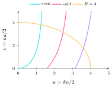

; a finite well of depth always has at least one bound state, with even and odd states found from and
; a finite well of depth always has at least one bound state, with even and odd states found from and  .
.Infinite well
 for , elsewhere (Schrödinger 1926). Inside, with ; boundary conditions give :
for , elsewhere (Schrödinger 1926). Inside, with ; boundary conditions give :
Finite well
for . Bound states . Inside: ; outside: decaying , . Continuity of  and at :
and at :
Picture

Worked example
GaAs quantum well in AlGaAs, width 10 nm, , treated as infinite: eV meV. The optical transition shifts from the bulk gap 1.424 eV to : confinement tunes the laser wavelength (quantum-well lasers).
Engineering applications
Quantum-well lasers and LEDs, quantum-cascade lasers, HEMT channels, quantum dots (colour set by size in QLED displays), the 2DEG of silicon MOSFET inversion layers.
Pitfall
In a finite well the wave function leaks into the barrier (): the effective width is larger, so energies are lower than in the infinite-well estimate.